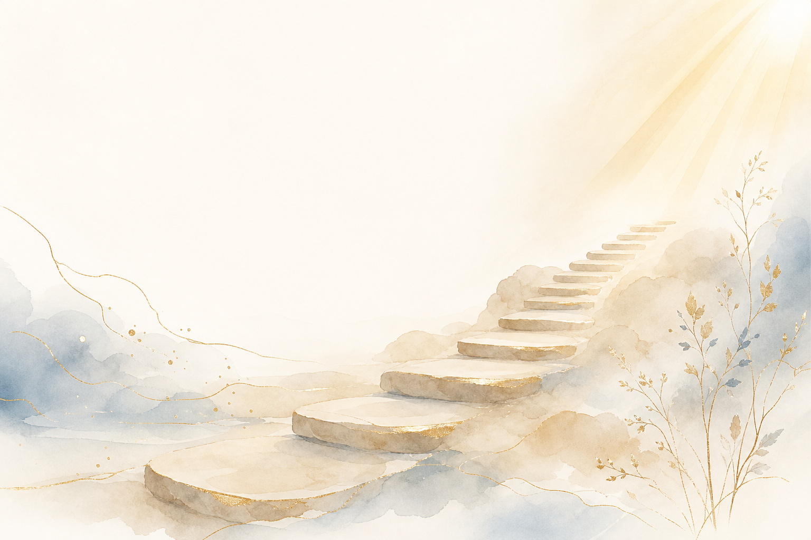
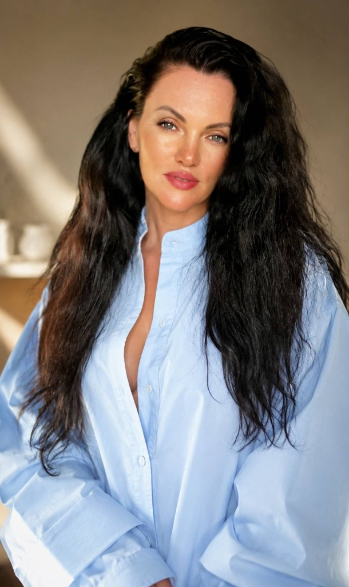
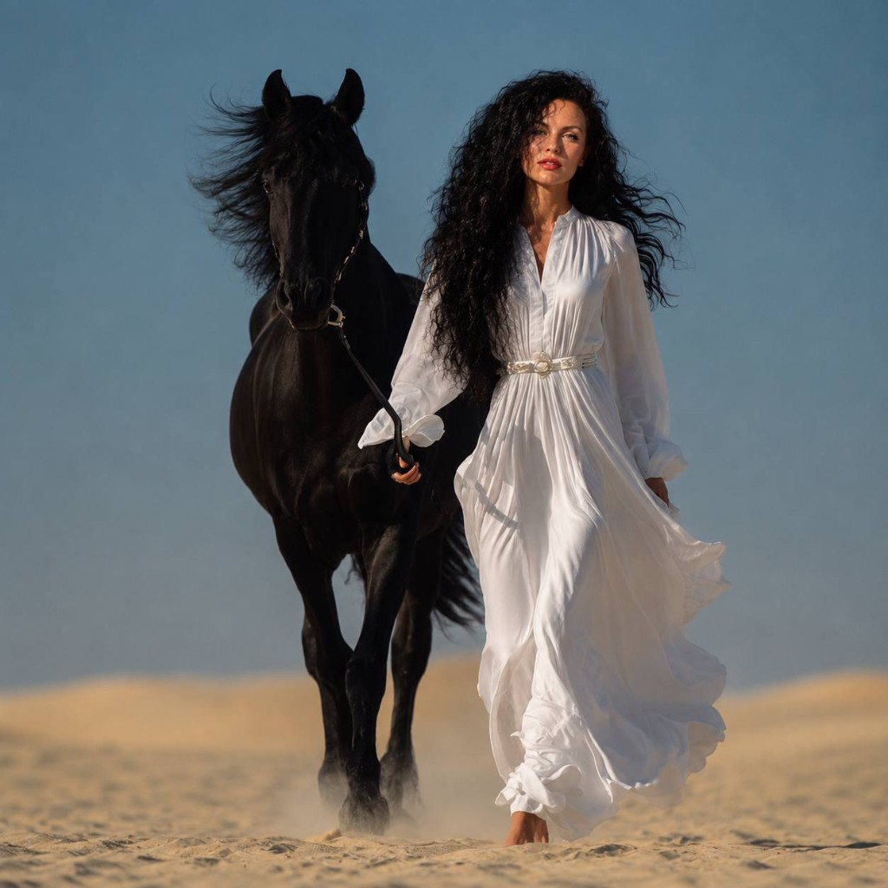

Психологи
Помогаем проявить экспертность через доверие, глубину и сильное позиционирование, чтобы клиенты чувствовали вашу ценность ещё до первой консультации.
Katie Agency — место, где стратегия, психология личности, искусственный интеллект, визуальная эстетика и современные технологии объединяются в единую систему. Мы помогаем коучам, психологам, наставникам, консультантам и экспертам мягких ниш находить собственный голос и превращать его в бренд, который отражает человека и привлекает нужных клиентов.
С теми, кто несёт знания, поддержку, осознанность, исцеление и трансформацию.
С теми, чья работа меняет жизнь, но её ценность не всегда становится заметной для мира.
Наша задача — помочь вашему пониманию стать видимым, вашей уникальности — узнаваемой, вашему опыту — сильного личного бренда.
Чтобы ваши клиенты почувствовали вашу ценность ещё до первой встречи.
Помогаем проявить экспертность через доверие, глубину и сильное позиционирование, чтобы клиенты чувствовали вашу ценность ещё до первой консультации.

Превращаем опыт, знания и результаты клиентов в понятную систему личного бренда, которая привлекает именно ваших людей.
Помогаем бережно упаковать глубину практики в современный бренд, сохранив её суть, этику и уникальность.
Переводим сложные состояния, смыслы и трансформации на понятный клиентам язык, делая вашу работу видимой и востребованной.
Уникальность не создаётся. Она вспоминается.

Большинство экспертов начинают с логотипа, визуала и контента.
Но если человек не понимает себя, свои смыслы, ценности и уникальность — никакая стратегия не даст долгосрочного результата.
Поэтому мы начинаем с главного — с личности.
Мы помогаем человеку увидеть свои сильные стороны, понять свою историю, раскрыть уникальность — и только потом превращаем всё это в продукты, контент, визуальную систему, AI-инструменты и сайт.
Распаковка личности, ценностей, сильных сторон и уникальности
Карта смыслов, позиционирование, аудитория и продуктовая линейка
Визуал, сайт, контент, AI-инструменты и системный выход в мир
В основе Katie Agency лежит авторский метод SOUL — не про создание образа, а про раскрытие того, кем человек уже является.
Глубинная работа с ценностями, личностью и внутренней природой. Без масок — только то, что по-настоящему твоё.
Всё, что ты пережил — это ресурс, а не груз. Мы находим в твоей истории силу и превращаем её в бренд-нарратив.
Распаковка экспертности, поиск уникального сочетания качеств — то, что делает тебя незаменимым для конкретного клиента.
Продукты, контент, визуальная система, AI-инструменты и сайт — всё выстроено под твою уникальность.
После прохождения этого пути появляется не только понимание себя, но и ясность — как реализовать свои идеи в реальном мире.
Посмотреть услугиМеня зовут Катрин Журавлёва, и я основатель Katie Agency.
Мой путь начался совсем не в маркетинге.
По первому образованию я юрист и более 15 лет работала в одной из крупнейших компаний Беларуси. Я занималась переговорами, тендерами, стратегическими решениями и построением процессов.
В 35 лет моя жизнь полностью изменилась.
Переезд с семьёй в другую страну. Освоение более семи новых профессий. Поиск новых смыслов. Поиск себя заново.
Именно тогда я заметила одну закономерность: большинство талантливых людей не знают своей настоящей ценности. Они обладают знаниями, опытом и талантом — но не умеют показать это миру.
Несколько лет я изучала психологию, цифровую психологию, маркетинг, брендинг, современные технологии и искусственный интеллект. И постепенно пришла к пониманию:
Личный бренд начинается не с продвижения. Он начинается с понимания себя.
Сегодня я объединяю смыслы, стратегию, цифровую психологию, современные технологии, искусственный интеллект и визуальный брендинг, чтобы помогать людям находить собственный путь проявленности.
Я работаю со специалистами помогающих профессий, потому что знаю: помогая одному сильному эксперту стать видимым, уверенным и востребованным, я помогаю всем тем людям, которым он сможет изменить жизнь своей работой.
Я верю, что мир счастливых людей начинается с тех, кто помогает другим становиться счастливее. Именно поэтому существует Katie Agency.
Я вижу суть, чувствую эксперта и превращаю это в сильный бренд, который притягивает клиентов, открывает двери и меняет жизни.

От первого шага самопознания до полноценного бренда с контентом, продуктами, AI-инструментами и собственным сайтом. Каждый продукт — часть единого пути.
41 страница глубокой распаковки личности с 7 AI-помощниками. Самостоятельная работа по авторскому методу SOUL.
Получить воркбукНаходим то, что мешает двигаться дальше, и составляем конкретный план действий. Клиент уходит с ясностью.
Создание фундамента личного бренда: понимание уникальности, тем для контента и визуальная карта смыслов.
Создание стратегии развития бренда. Клиент получает чёткий план, структуру продуктов и дорожную карту.
Создание экосистемы личного бренда
От самопознания до полноценного бренда, контента, продуктов, AI-инструментов и собственного сайта. Глубокая работа под ключ, где каждый элемент выстроен под твою уникальность.
Реальные пути экспертов — от невидимости и хаоса знаний к сильному бренду, который работает без выгорания.
Было
Марина — клинический психолог с 8 годами практики. Глубокая, внимательная, с реальными результатами у клиентов. Но на вопрос «кто твой клиент и почему именно ты?» — терялась. Инстаграм вёлся хаотично: то умные посты про психологию, то молчание на три недели. Клиенты приходили по сарафану, но нестабильно. Сайта не было. Ценник занижала, боялась поднять.
Стало
На стратегической сессии обнаружили: Марина специализируется на тревожных расстройствах у женщин после 30 в периоды жизненных переходов — и в этом ей нет равных. Это стало основой бренда. Мы прописали карту смыслов, создали лендинг и контентную систему на 3 месяца.
«Я впервые почувствовала, что мой бренд — это я. Не маска, не шаблон. Просто я — но видимая.» — Марина К., клинический психолог
Было
Ольга — сертифицированный энергопрактик, работает с телесными блоками и родовыми программами. Клиенты на сессиях получали глубокие результаты. Но в соцсетях — тишина. Ольга боялась осуждения, не знала, как говорить о своей работе «нормальным языком» и при этом не предавать суть. Продукт существовал только в формате 1:1.
Стало
Вместе нашли язык: не «работа с родовыми программами», а «помогаю женщинам перестать повторять чужой сценарий и начать жить своей жизнью». Это попало точно в аудиторию. Разработали формат группового онлайн-интенсива, создали прогрев в Telegram и простую продающую страницу.
«Катрин помогла мне не "упаковать себя в коробку", а найти слова, которые МОИМИ устами говорят правду. Это другое ощущение.» — Ольга Р., энергопрактик
Было
Наталья — таролог с психологическим образованием. Её расклады — это глубокий анализ ситуации, а не предсказания. Но визуально и в контенте она выглядела «как все»: мистика, свечи, рунические шрифты. Аудитория не понимала разницы. Цена за консультацию — €25. Хотела поднять, но боялась потерять клиентов.
Стало
Переименовали формат: «Таро-анализ для принятия стратегических решений». Создали визуальную идентику в нейтральной editorial-эстетике. Прописали позиционирование: «Таролог для людей, которые думают, а не верят в предсказания». Это сразу отстроило её от конкурентов.
«Я всегда знала, что делаю что-то большее, чем просто "гадание". Наконец это видно и другим.» — Наталья В., таролог-аналитик
Было
Анна — сертифицированный коуч ICF с корпоративным бэкграундом. 12 лет в управлении, 3 года в коучинге. Вела блог, снимала рилсы, запускала офферы — результат нулевой. Пробовала разные ниши: «коуч для всех» → «коуч для женщин» → «коуч для предпринимателей». Хаос в позиционировании привёл к выгоранию и ощущению, что «это не моё».
Стало
На сессии выяснили: её суперсила — помогать топ-менеджерам и HiPo-специалистам переходить из найма в собственный проект без потери дохода. Это был её личный путь — и именно это притягивало нужных людей. Создали лендинг, прописали 90-дневную программу и подключили AI-агента для ведения переписки с потенциальными клиентами.
«Один разговор с Катрин дал больше ясности, чем 4 курса по продвижению вместе взятые.» — Анна Л., коуч ICF
Было
Виктория — астролог с системным образованием, совмещает западную и ведическую традиции. Писала длинные разборы планетарных транзитов, делала честный и глубокий контент. Но аудитория не росла. Причина — в отсутствии чёткого голоса и непонимании, кому именно она пишет. Монетизации не было вообще.
Стало
Определили аудиторию: женщины 28–42, которые используют астрологию как инструмент самопознания и планирования — не как магию, а как систему. Прописали голос, создали контент-систему для Telegram, разработали линейку продуктов: от бесплатного лид-магнита до персонального разбора за €120.
«Я наконец поняла, что дело было не в качестве контента. Дело было в том, что я не понимала, для кого пишу. Теперь понимаю — и это всё изменило.» — Виктория М., астролог
Глубина и смыслы
Карта смыслов, распаковка, цифровая психология — всё строится на ценностях конкретного человека
Эстетика и красота
Премиальный визуал, гармония, editorial-стиль — бренд должен ощущаться, а не только читаться
Технологии и AI
Команда ИИ-агентов забирает рутину — время остаётся для души, клиентов и стратегии
Рост и результат
Конкретные шаги, запуски, цифры и видимость — не вечное «слушание без действия»
Сайт без личного бренда — это просто страница в интернете без смысла. Мы всегда начинаем с распаковки личности и стратегии, а уже потом создаём сайт, который становится живым отражением твоей уникальности. Но если у тебя уже есть понимание себя — мы можем начать с сайта как с отдельного проекта. Первый шаг — диагностическая сессия, которая покажет, с чего именно стоит начать тебе.
Маркетинговые агентства работают с тем, что есть — упаковывают и продвигают. Мы идём глубже: сначала помогаем человеку понять себя, найти свои смыслы и уникальность через авторский метод SOUL, и только потом создаём маркетинг. Это не про «красивую картинку» — это про бренд, который невозможно скопировать, потому что он основан на настоящем человеке. Мы AI Media Agency нового поколения, где психология личности, стратегия и технологии работают как единая система.
Именно для тебя. Нелюбовь к продажам чаще всего возникает, когда человек предлагает что-то «не своё» — шаблон, который не совпадает с его ценностями. Когда бренд построен на настоящей уникальности, продажи становятся естественным продолжением общения. Ты просто делишься собой — и нужные люди приходят сами. Мы помогаем выстроить именно такую систему.
Всё зависит от формата. Диагностическая сессия — 40–60 минут. Глубокая распаковка и карта смыслов — 60–90 минут плюс несколько дней на подготовку материалов. Индивидуальное сопровождение по созданию экосистемы бренда занимает от 1 до 3 месяцев в зависимости от объёма. Конкретные сроки и состав работ мы всегда обсуждаем индивидуально на стратегической или диагностической сессии.
Да, мы работаем полностью онлайн. Все сессии проходят в Zoom или другом удобном формате видеосвязи. Все материалы, карты смыслов, стратегии и готовые продукты передаются в цифровом формате. Мы работаем с клиентами из любой страны мира — география не ограничивает.
Возможно, внутри тебя уже есть всё необходимое для реализации. Иногда нужен человек, который поможет это увидеть, собрать в систему и превратить в понятный путь.